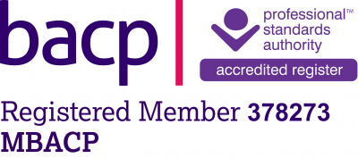
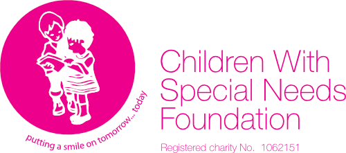

Counselling is a talking therapy that involves a trained therapist listening to you and helping you find ways to deal with emotional issues. Sometimes the term "counselling" is used to refer to talking therapies in general, but counselling is also a type of therapy in its own right.
What Is Counselling?
What to Expect From Counselling?
At your appointment, you'll be encouraged to talk about your feelings and emotions with a trained therapist, who'll listen and support you without judging or criticising.
The therapist can help you gain a better understanding of your feelings and thought processes, and find your own solutions to problems. But they will not usually give advice or tell you what to do.
Benefits Of Counselling?
What counselling can help with
- A mental health condition, such as depression, anxiety or eating disorder
- An upsetting physical health condition, such as infertility
- A difficult life event, such as a bereavement, a relationship breakdown or work related stress
- Difficult emotions - for example, low self-esteem or anger
- Other issues, such as sexual identity
About Me
I am a qualified and experienced counsellor and psychotherapist offering short term and open ended counselling to adults and adolescents. Specialising in a number of areas including working with children and adolescents with Autistic Spectrum Disorder and low self esteem. I provide a warm, professional and non judgemental space so we can together safely explore what has brought you to seek out counselling. I utilise therapeutic tools to assist the counselling process and am happy to explore symbols and metaphors. Whether you have found yourself in crisis, want to explore repetitive patterns of behaviour or can identify with one of my areas of particular interest, we can work at your pace and towards goals and results depending on your unique needs. For further information on the areas I may assist you with please see page about me. This list is by no means exhaustive and I work fluidly to accommodate your changing and individual needs and circumstances. The first step is to make contact. I offer a free initial consultation.
“In working with clients strive for connectedness above all else.” - Yalom
Training, Qualifications & Experience
I am a qualified and experienced counsellor. My therapeutic process is integrative, using aspects of many theoretical models to best suit your individual needs. My client work is grounded in Carl Rogers Person centred theory which embodies nurture and empowerment. My academic background is grounded in science and research which I rely on reflectively to support and inform my therapeutic work. What that means for you is as your counsellor I believe that the working relationship between us is key and is based on trust and working collaboratively. My style of working is to facilitate a warm, safe, non-judgemental space for us to explore together the reasons that have brought you to seek out counselling whatever they may be. I often explore representational themes in my client work and believe that the lived experience of you my client and myself will inform our work together to bring about change. I offer short and open-ended counselling for individuals in a wide range of area’s including but not limited to: Post-natal depression, Anxiety, Abuse, emotional, sexual, violence, Addiction, Affairs and Betrayals, Bereavement, Bullying, Parental support, Depression, Domestic Abuse, Dualism and Conflicting Roles, Eating Disorders, Family Relationships and Dynamics, Low self-esteem/confidence, Panic Disorders, Relationship issues, Separation, Self-harm, Trauma. I offer a free initial consultation which is just a chat about your expectations along with what has brought you to consider counselling. During that time, I can answer any questions you may have. I understand that seeking out counselling is not an easy step for all. It maybe a difficult and worrying time. It takes courage and I recognise this.
Other Areas Of Counselling I Deal With
Children and Adolescents - This age range experience emotional distress for many reasons without the vocabulary to articulate and appropriately express what they are feeling. They may be exhibiting behaviours such as anger, withdrawal and anxiety as well as signals of depression. This may be a result of a change in family dynamics through, divorce, separation or bereavement. Coping with adjustment and the transition into and through adolescents or as a result of experiencing or witnessing domestic abuse, sexual abuse or controlling and coercive behaviour bullying or low self-esteem. I facilitate a counselling process which enables the young person to sort through and express feelings and emotions that may feel overwhelming to them and that they are unable to verbalise utilising a range of therapeutic tools in a safe, nurturing environment.
Self Esteem and Self Image - You may feel “stuck” in negative repetitive cycles of behaviour or experience low self esteem which holds you back from fully experiencing life in the way you would wish to. This may manifest in unhealthy controlling relationships with food, intimate or family relationships, lack of self-confidence or anxiety. It maybe you feel you give all your “power” away to unhealthy relationships, become co-dependent repeating unhelpful self-sabotaging cycles of behaviour and want to better understand what drives this? Through nurture and self-reflection, we can move in the direction towards understanding and self-acceptance to making changes to reclaim your power.
Dualism and Conflicting Roles - Conflicting roles at work and at home can leave you feeling split and fragmented with difficulty in maintaining balance. In many professions there is an expectation that you put on your professional mask or work persona to deal with highly emotive, violent, distressing and stressful circumstances and then metaphorically take it off at the end of your shift and revert back to your home persona. In my experience this can lead to feelings of vulnerability, anxiety and leave you feeling exposed. In these circumstances defences are constructed or existing ones reinforced. This may feel to you and the loved ones around you as an emotional shut down. These masks or conflicting aspects of ourselves can be explored and the emotional impact can be better understood and managed by employing coping strategies.

Partners

